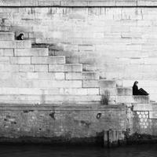

Voci dalla mostra
Chi l'ha già vista
“Sembra di camminare dentro Parigi. Ogni foto una piccola storia a sé.”
Giulia M.
Pordenone
“Un allestimento misurato, colto, che lascia parlare la fotografia.”

Marco C.
Udine
“L'ironia di Doisneau, la tenerezza, la grande Parigi del dopoguerra: tutto qui.”

Serena L.
Trieste